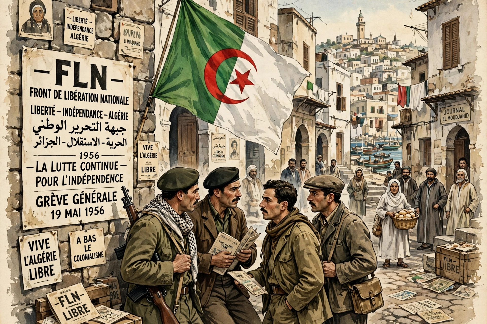

The National Liberation Front (FLN; Arabic: جبهة التحرير الوطني; French: Front de libération nationale) is an Algerian nationalist political party founded in 1954 to fight for independence from France.

FLNThe FLN launched the Algerian War on 1 November 1954 (Toussaint Rouge). Its armed wing, the ALN, waged guerrilla and urban warfare; Ahmed Ben Bella, Houari Boumédiène and others led it. The Évian Accords (1962) led to independence on 5 July 1962.
The FLN was Algeria's sole legal party until 1989, overseeing socialist policies under Ben Bella and Boumédiène. It later shared power, often described as part of "le pouvoir" with the military, and remained a major party through the Bouteflika era and the 2019 Hirak protests. See Algerian War.